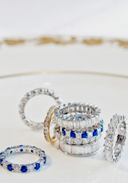
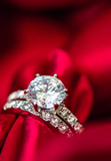

May 26, 2017 2017法蝶擁抱愛週年慶 輕時尚美學，揭示著一種輕靈、精巧的風格品味，可以低調優雅，也可以獨具個性。表現在珠寶的設計上，不僅開拓了珠寶輕時尚美學，揭示著一種輕靈、精巧的風格品味，可以低調優雅，也可以獨具個性。表現在珠寶的設計上，不僅開拓了珠寶  May 26, 2017 情人節特輯，喬治哥的寶貝 許允樂最愛法蝶珠寶 輕時尚美學，揭示著一種輕靈、精巧的風格品味，可以低調優雅，也可以獨具個性。表現在珠寶的設計上，不僅開拓了珠寶輕時尚美學，揭示著一種輕靈、精巧的風格品味，可以低調優雅，也可以獨具個性。表現在珠寶的設計上，不僅開拓了珠寶  May 26, 2017 『我的幸福，我做主』分享拍照贈夏季必備復古玫瑰金鎖骨鍊 輕時尚美學，揭示著一種輕靈、精巧的風格品味，可以低調優雅，也可以獨具個性。表現在珠寶的設計上，不僅開拓了珠寶輕時尚美學，揭示著一種輕靈、精巧的風格品味，可以低調優雅，也可以獨具個性。表現在珠寶的設計上，不僅開拓了珠寶 May 26, 2017 求婚戒指，法蝶珠寶都幫您準備好了! 輕時尚美學，揭示著一種輕靈、精巧的風格品味，可以低調優雅，也可以獨具個性。表現在珠寶的設計上，不僅開拓了珠寶輕時尚美學，揭示著一種輕靈、精巧的風格品味，可以低調優雅，也可以獨具個性。表現在珠寶的設計上，不僅開拓了珠寶 May 26, 2017 你，獨一無二，公益手作活動 輕時尚美學，揭示著一種輕靈、精巧的風格品味，可以低調優雅，也可以獨具個性。表現在珠寶的設計上，不僅開拓了珠寶輕時尚美學，揭示著一種輕靈、精巧的風格品味，可以低調優雅，也可以獨具個性。表現在珠寶的設計上，不僅開拓了珠寶 May 26, 2017 貝兒公主的唯一選擇 玫瑰心情優惠中! 輕時尚美學，揭示著一種輕靈、精巧的風格品味，可以低調優雅，也可以獨具個性。表現在珠寶的設計上，不僅開拓了珠寶輕時尚美學，揭示著一種輕靈、精巧的風格品味，可以低調優雅，也可以獨具個性。表現在珠寶的設計上，不僅開拓了珠寶 May 26, 2017 春雷響萬物生，珠寶巡迴展 輕時尚美學，揭示著一種輕靈、精巧的風格品味，可以低調優雅，也可以獨具個性。表現在珠寶的設計上，不僅開拓了珠寶輕時尚美學，揭示著一種輕靈、精巧的風格品味，可以低調優雅，也可以獨具個性。表現在珠寶的設計上，不僅開拓了珠寶 May 26, 2017 拍照、分享，法蝶送您擁抱愛珍珠墜 輕時尚美學，揭示著一種輕靈、精巧的風格品味，可以低調優雅，也可以獨具個性。表現在珠寶的設計上，不僅開拓了珠寶輕時尚美學，揭示著一種輕靈、精巧的風格品味，可以低調優雅，也可以獨具個性。表現在珠寶的設計上，不僅開拓了珠寶